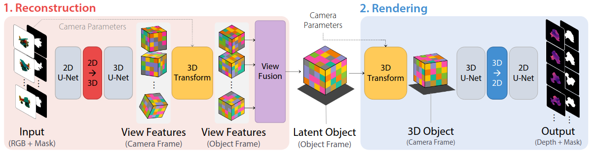
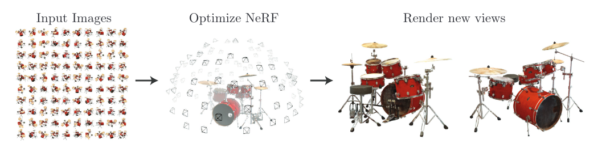

Description:
6D object pose estimation is important for robotic applications [1] and there is a trend in the research community to switch to the implicit representations of the object shape representation [2] [3]. In the scope of this thesis, the student should explore the latent space representation of objects given a few rgb images and retrieve the 6D object pose given images of new viewpoints.
Requirement:
Students should be familiar with pytorch or tensorflow and have hands-on experience with deep learning in past projects. Aiming for a paper publication would be a plus.

LatentFusion [2]

NERF [3]
Benefits:
you can learn state of art 6d object pose estimation networks and cooperate with experts both at the Chair and inside our industrial corporate partners.
[1] Wang, Gu, et al. “GDR-Net: Geometry-Guided Direct Regression Network for Monocular 6D Object Pose Estimation.” Proceedings of the IEEE/CVF Conference on Computer Vision and Pattern Recognition. 2021.
[2] Mildenhall, Ben, et al. “Nerf: Representing scenes as neural radiance fields for view synthesis.” European conference on computer vision. Springer, Cham, 2020.
[3]Park, Keunhong, et al. “Latentfusion: End-to-end differentiable reconstruction and rendering for unseen object pose estimation.” Proceedings of the IEEE/CVF conference on computer vision and pattern recognition. 2020.